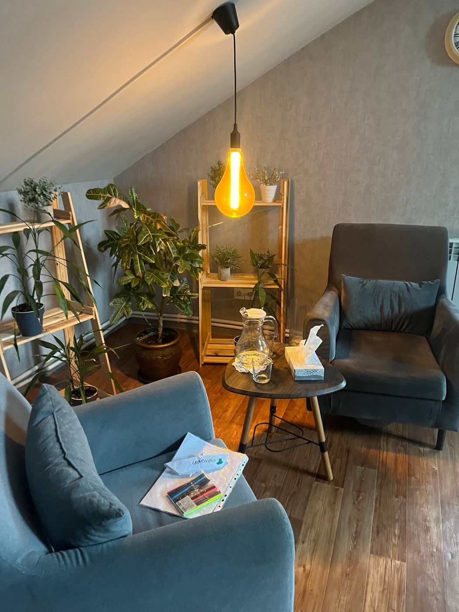
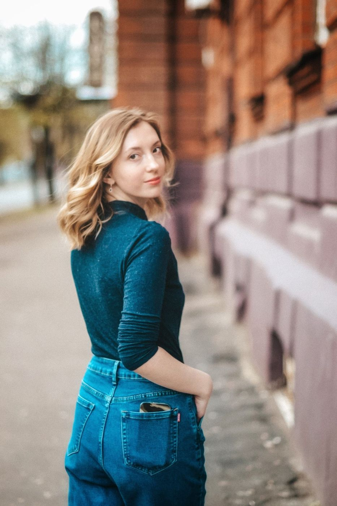
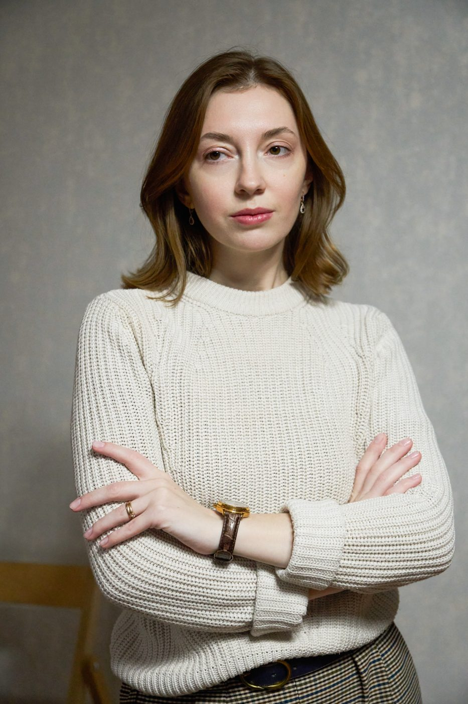
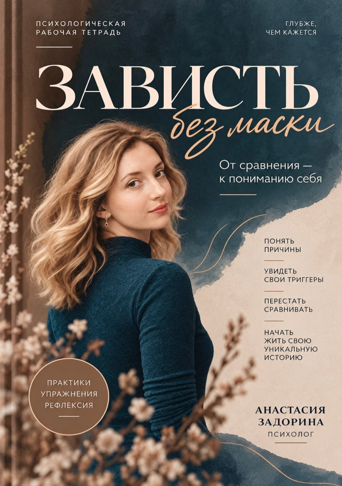
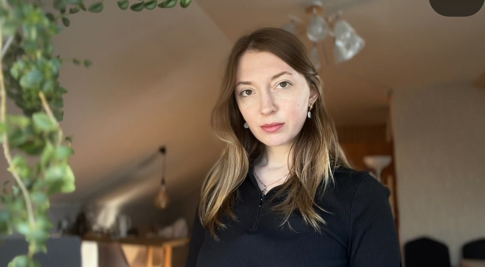
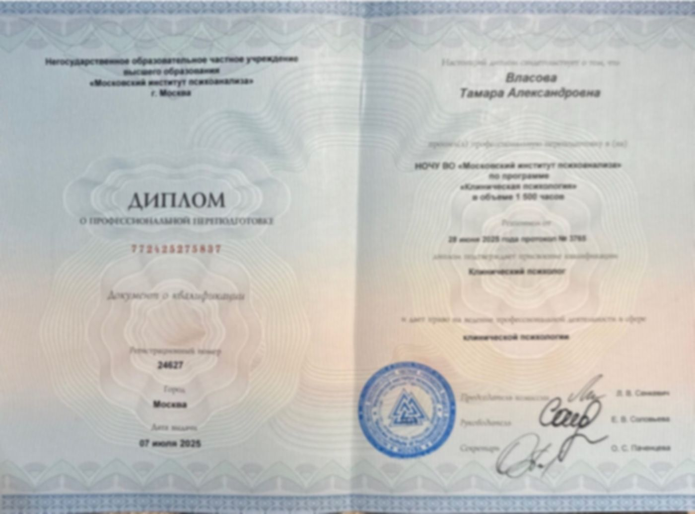
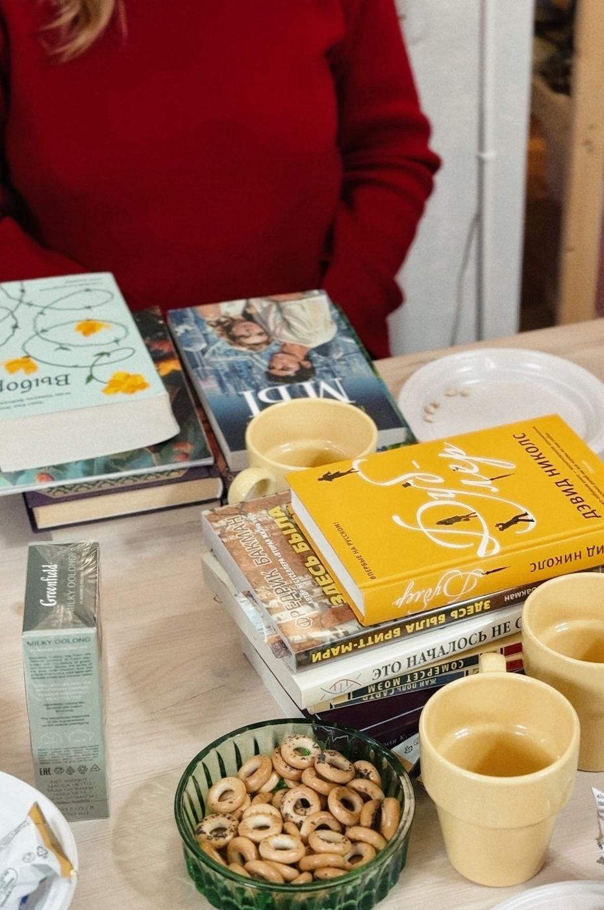
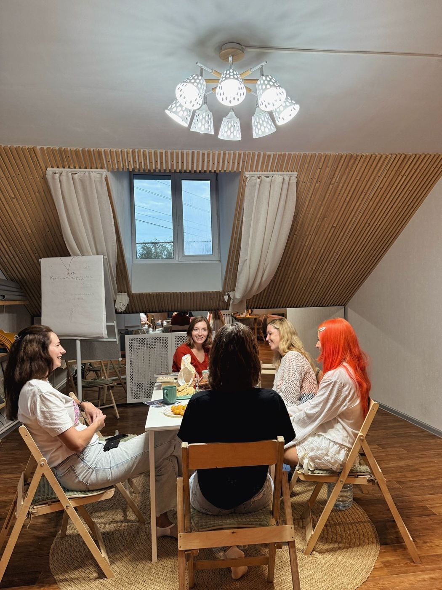
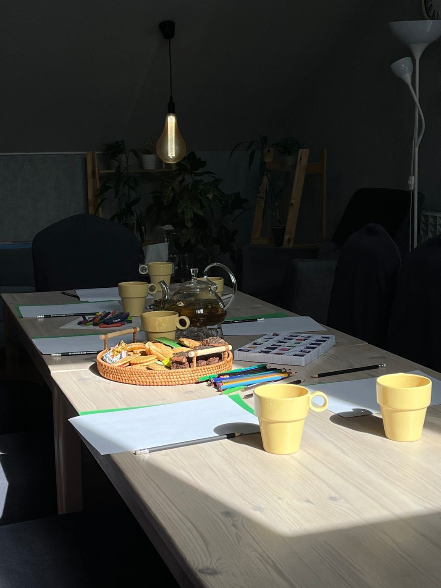

Индивидуальная консультация
Очно в Костроме или онлайнВремя, которое целиком принадлежит вам: разбираемся в переживаниях, отношениях и выборе.
[0 000] ₽за встречуЗаписаться

Психология, индивидуальные консультации, авторские рабочие тетради и сообщества для тех, кому интересно исследовать себя и окружающий мир.

Я психолог, волонтёр Красного Креста и автор рабочих тетрадей. Помогаю замечать, что с вами происходит, и находить опору внутри — бережно и в вашем темпе.
В работе я опираюсь на интегративный подход — это значит, что мы не ищем «правильный ответ», а вместе исследуем, как устроены ваши чувства, мысли и отношения.
Мой путь начался с бакалавриата — я пошла на педагога. Тогда мне казалось, что главное — это знать, как передавать знания. Затем была магистратура, где я начала глубже понимать, как творчество и слова влияют на нас и окружающих. А сейчас я уже четвёртый год учусь на психолога — и каждый новый семестр открывает мне новые горизонты. И это не считая десятков дополнительных курсов, вебинаров и мастер-классов, которые я прохожу параллельно.
Но самое удивительное не в дипломах и сертификатах. Самое удивительное — в том, как каждый из этих этапов менял моё восприятие мира. Каждый курс давал мне новую оптику, я начала видеть, какие сложные и тонкие процессы стоят за, казалось бы, простым человеческим взаимодействием. Как одно слово, сказанное в нужный момент, может исцелить, а другое — ранить.
Рабочие тетради, которые помогают остановиться, задать себе важные вопросы и посмотреть на привычные переживания с другой стороны.
Первая тетрадь — «Зависть без маски»: от сравнения к пониманию себя. Зависть принято стыдиться, но оно часто честнее всего подсказывает, чего нам на самом деле хочется.

Когда трудно расслабиться, много мыслей «а вдруг» и мало сил.
Зависть, вина, стыд, злость — разобраться, о чём они говорят.
С партнёром, родителями, друзьями — и с самой собой.
Внутренний критик, сравнение с другими, страх ошибиться.
Переезд, расставание, смена работы, поиск своего пути.
Блоки, прокрастинация, желание писать и не бояться быть увиденной.

Индивидуальная консультация — это возможность уделить внимание себе, своим переживаниям и отношениям. Время, которое целиком принадлежит вам.
Встречи проходят очно в кабинете в центре Костромы или онлайн.
ВКонтакте — коротко, что беспокоит. Можно одной фразой.
Очно в Костроме или онлайн — как вам удобнее.
Знакомимся, проясняем запрос и решаем, подходим ли мы друг другу.
Обычно раз в неделю. Длительность работы обсуждаем вместе.


Время, которое целиком принадлежит вам: разбираемся в переживаниях, отношениях и выборе.
Вопросы и упражнения, чтобы посмотреть на зависть по-новому и понять, чего вы на самом деле хотите.

Читаем одну книгу и обсуждаем её через призму психологии — за чаем и тёплыми разговорами.

Пишем по заданиям, читаем вслух и поддерживаем друг друга без критики. Опыт не нужен.

Если не нашли ответ — просто напишите мне.
Достаточно того, что вам хочется поговорить и разобраться. Не нужно ждать, пока станет совсем плохо, — к психологу можно прийти и с интересом к себе.
По содержанию — ничем. Онлайн удобно, если вы не в Костроме или вам проще говорить из дома. Важно лишь найти тихое место, где вас никто не услышит.
Предупредите меня за [24] часа — и мы найдём другое время. При более поздней отмене встреча оплачивается.
Конечно. Клубы — для всех, кому интересно читать, писать и думать о себе. Специальные знания не нужны.
Да. Всё, что вы рассказываете на консультации, остаётся между нами — это основа профессиональной этики.
Напишите пару слов о том, что вас беспокоит, — я отвечу в течение дня и предложу время для первой встречи.